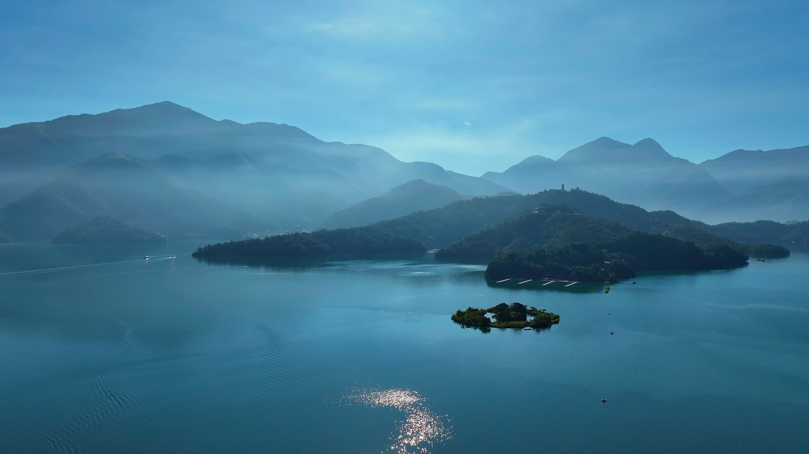

路線 01
休閒型
活盆地．頭社騎跡
騎進日月潭最療癒的秘境！走訪全台罕見的「活盆地」奇景，穿梭稻田與彩繪巷弄之間，坡度平緩、老少咸宜，是全家同遊的最佳首選。
路線亮點：鄉村小吃 → 魚池農會頭社分部 → 絲瓜田或季節田園 → 活盆地體驗 → 阿嬤洗衣場 → 彩繪村三聖宮 → 農村柑仔店 → 哇啦蜜冰店 → 頭社自行車道

Every Day is Come!BikeDay．在日月潭的每一天，都是適合騎車的日子。
由日月潭領騎導覽人員全程隨行帶隊，深度探索日月潭、埔里、頭社、中興新村。
不論選擇哪一條路線，出發前先看這裡就對了。
350 元／人
費用包含：電輔自行車、安全帽、領騎與殿後全程隨行、旅遊平安保險、紀念品、完騎認證書
旅遊平安保險
意外死殘保額 200 萬元
意外醫療保額 10 萬元（實支實付）
機能袖套 1 份
完騎認證書1張
領騎＋殿後全程隨行
定點解說
統一使用 YOTA 電動輔助自行車，安全好上手，親子皆適用。
合格閃電標章，控制器操作直覺、一指搞定，全程由領騎人員協助調整車況，新手也能輕鬆上路。
皆採 ACCUPASS 線上報名，額滿為止。
騎進日月潭最療癒的秘境！走訪全台罕見的「活盆地」奇景，穿梭稻田與彩繪巷弄之間，坡度平緩、老少咸宜，是全家同遊的最佳首選。